JRC4558 Analysis
The JRC4558 integrated circuit by Japan Radio Company is a dual operational amplifier internally compensated and constructed with bipolar transistors on a single silicon chip. The high voltage gain (100 dB typ.), good input impedance (5 MΩ typ.) and versatile power supply (± 4 to 18 Volts) make it perfect to fit in pedal circuit designs. This chip has industry standard pinout, meaning that there are several different suppliers manufacturing pin compatible 4558 devices and also it can replace other standard dual op-amps like the TL072, NE5532 or the OPA2134. The first RC4558 monolithic dual opamp was developed by Raytheon Semiconductors in 1974.
The 4558 dual amp is linked with the history of the guitar pedals development. Many designers included this part in some of the most successful effects like the Orange Squeezer, DOD YJM 30, Boss OD1, Tube Screamer or Peavey equipment.
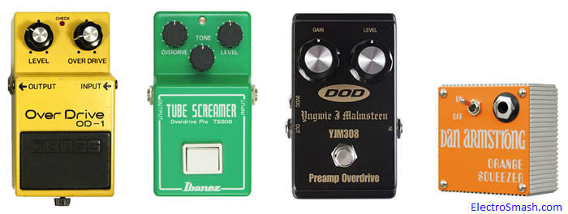
This IC was undoubtedly chosen in the beginning by Japanese design engineers because it was one of the cheapest dual opamps on the market with acceptable audio performance. As such, it was used in huge volumes of Japanese audio equipment. Despite its questionable audio performance, it seems to be well suited to duty in overdrive circuits.Table of Contents:
1. Internal Circuit.
1.1 Current Supply.
1.2 Input Stage.
1.2.1 Long Tailed Pair Differential Amplifier.
1.2.2 Current Mirror.
1.3 Voltage Amplifier Stage.
1.4 Output Stage.
1.5 Vbe Multiplier Bias Circuit.
1.6 Feedback Path.
2. The JRC4558 Myth.
3. Resources.
1. JRC4558 Internal Circuit.
The JRC4558 internal schematic is based on the Lin Topology (named after Hung C. 'Jimmy' Lin an RCA researcher) following the classic 741 type opamp structure with some modifications. Find below the simplified circuit provided by JRC, broken down into blocks: Current Supply, Input Stage, Voltage Amplifier Stage (VAS), Output Stage (OPS) and Feedback Path.
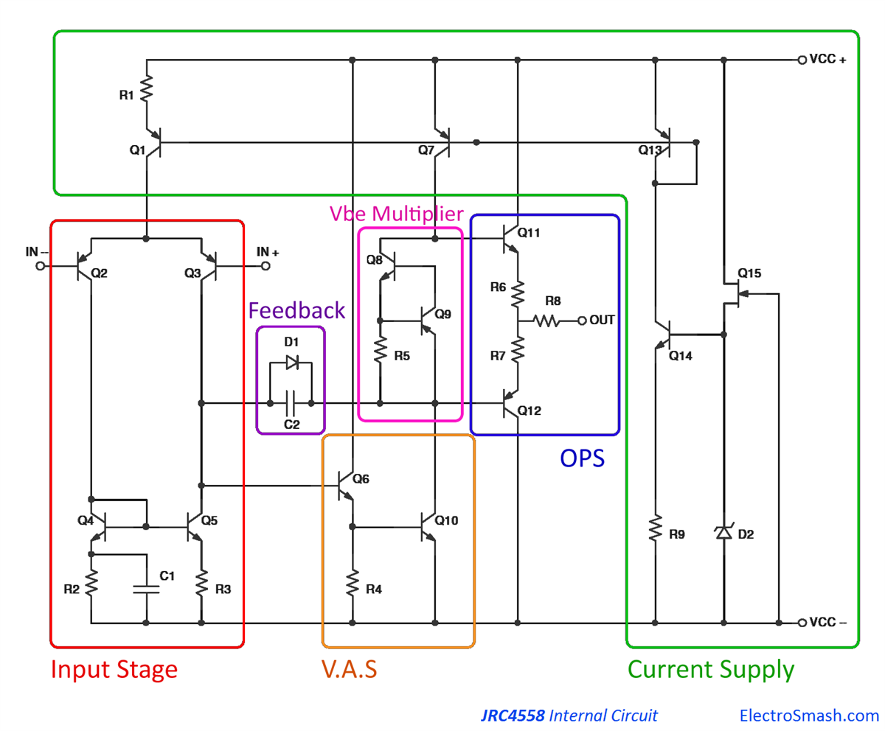
1.1 JRC4558 Current Supply.
The Active Current Supply it is a utility stage which provides a constant flow of current to the different blocks. A stable current source is important in order to improve linearity and noise rejection. This stage highlighted in green color is formed by Q1, Q7, Q13, Q14, Q15, R1, R9 and D2:
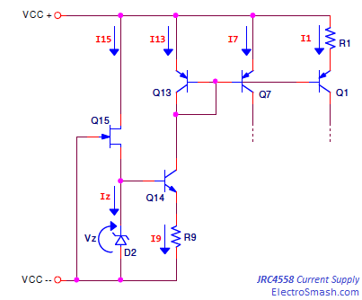
The JFET Q15 is a self-biased current source, it will provide a constant current source independent from the voltage supply. The start-up of this part of the circuit is simple:
- When the +Vcc voltage source is turned on, no current is yet flowing through the JFET Q15. Then the voltage drop across the Zener diode D2 and VGS will be zero. With zero VGS the transistor enters in saturation region allowing a large current to flow through the JFET, so the current will increase. As the current increases, a voltage drop will develop across the Zener, until the diode will be reversed biased. The gate will become negatively biased with regards to the source, negative values of VGS will start to shut Q15 off. Eventually, a stable equilibrium will be attained through feedback, where VGS is just right for the current flowing through the JFET.
Once the drain-source voltage reaches a certain minimum value, enters saturation where IDS current is approximately constant. So, the JFET current source sets the constant current I15 through Zener diode D2 making I15 = Iz
The Zener diode D2, when reverse biased has a constant voltage drop (Vz). As long as the Zener current (Iz) is between certain levels (Izmin and Izmax) called holding current, the voltage across the Zener diode (VZ) will be constantly working in the Voltage Regulation Area:
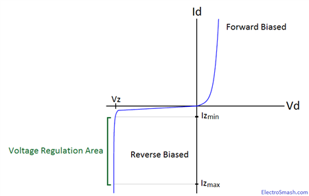
The Zener diode stabilized voltage VZ drives an emitter follower Q14 loaded by a constant emitter resistor R9 sensing the load current. As a result, the output current I9 is almost constant even if the load resistance and/or voltage changes. The circuit operates as a constant current source:
\[I_{9}=\frac{V_{z}-V_{be}}{R_{9}}\]
The external current mirror load of this current source is connected to the collector so that almost the same current flows through it and the emitter resistor.
- Q13 and Q7 are configured as a classic current mirror, meaning that the current through Q13 (I13) will be mirrored in Q7, making I13 = I7
- Q1 is a plain current PNP constant current source.
1.2 JRC4558 Input Stage:
The input stage is formed by a Long Tailed Pair (LTP) differential amplifier with a current mirror. This stage highlighted in red color is formed by Q1, Q2, Q3, Q4, Q5, R1, R2, R3, and C1:
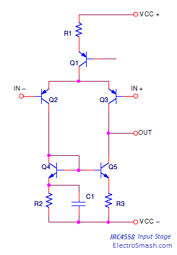
1.2.1 JRC4558 Long Tailed Pair Differential Amplifier.The Long Tail Pair phase inverter or Schmit is formed by a pair of identical and matched PNP transistors in common emitter configuration (Q2 and Q3). The current mirror Q4 and Q5 in the collector of Q2 and Q3 is the active load of the LTP. This topology is generally the best choice for an operational amplifier, it provides high input impedance, good voltage gain, common noise rejection as well as extra inputs for a summing feedback.
The circuit nature is to amplify the difference of its input signals Vin+ and Vin-, providing cancellation to all even distortion, making the amp immune to fluctuations of the supply voltage. To acquire real benefits from using an LTP input, the currents flowing through the differential transistors must be equalized. A very effective way to do it is using a current mirror.
1.2.2 JRC4558 Current Mirror.
It consists of a high Hfe (β) differential dual transistor Q4 and Q5, with matched transistor parameters. The thermal coupling between both transistors is ideal since they share the same package. There most important reasons to use a current mirror are to enhance the gain and the signal integrity:
1. Signal integrity is improved because the current mirror gives equal quiescent current for each side of the LTP. This balance is good for the linearity and Common Mode Ratio (CMRR) figure.
2. The JRC4885 differential amplifier has a single-ended output, where the gain is the half if we compare it with a differential output circuit. the current mirror will improve this intrinsic 50% losses.
1.3 JRC4558 Voltage Amplifier Stage (VAS).
The high gain voltage amplifier stage is the core of the power amplifier. Its task is to amplify the low amplitude input signal to a suitable level. This VAS circuit works in class-A mode since they basically require only a small amount of current, and therefore power losses over the active device can be retained reasonably small.
This stage highlighted in orange color is formed by Q6, Q10, and R4:
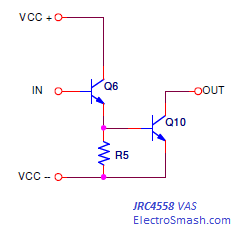
The VAS consists of a common emitter amplifier with two NPN transistors Q6 and Q10 connected in a Darlington configuration, making the current gain higher and using the output side of the current mirror Q7 as its collector load to achieve high gain.
βDARLINGTON = βQ1 * βQ2 + βQ1 + βQ2
The drawback of the Darlington topology is an approximate doubling of base-emitter voltage. Since there are two junctions between the base and emitter of the Darlington transistor, the equivalent base-emitter voltage is the sum of both base-emitter voltages.
VbeDARINGTON = VbeQ6 + VbeQ10 = 2Vbe
1.4 JRC4558 Output Stage.
The Output Stage (OPS) is a Class AB push-pull emitter follower amplifier with the bias current set by the Vbe Multiplier. This block is highlighted in blue color and is formed by Q11, Q12, R6, R7, and R8:
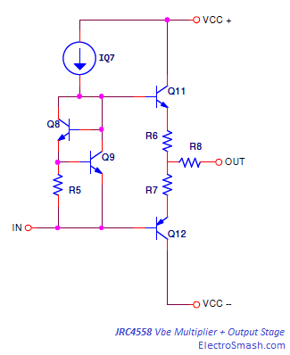
The function of the Output Stage is to provide enough current gain so that voltage potential provided by VAS can exist over the low load output impedance.
This stage is efficiently driven by the VAS. Variations in the bias with temperature, or between parts with the same type number are common, so crossover distortion and quiescent current may be subject to significant variation. The output range of the JRC4558 is about 1.5 volts less than the supply voltage, owing in part to Vbe of the output transistors Q11 and Q12.
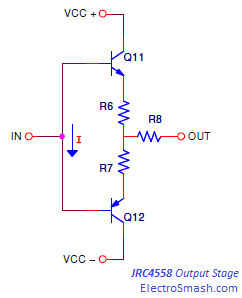
The output resistors R6, R7 and R8 inserted between output pair emitters also known as ballast resistors, are used to even out differences between internal emitter resistances of transistors, thus their current sharing is improved. The resistor values are usually pretty low, improving thermal stability, preventing the complementary transistors from directly loading each other and making quiescent current stable.
1.5 JRC4558 Vbe Multiplier Bias Circuit.
A Vbe Multiplier bias circuit also known as Bias Servo, Amplified Diode, Rubber Diode or Rubber Zener is placed in order to compensate the crossover distortion and protect the Output Stage from thermal shutdown. This block is highlighted in pink color and formed by Q8, Q9, and R4:
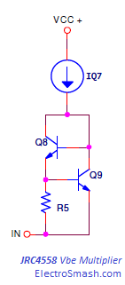
In the output push-pull topology, the transistors Q11 and Q12 do not start conducting until the input signal exceeds their forward voltage, which is the Vbe, typically around ±0.6 V. Counteract is to bias the transistors so that their idling voltage never drops below the forward voltage.
A specific amount of current, known as bias current, is constantly fed to the transistors’ bases in order to ensure that the transistors keep conducting for a desired amount of time, sacrificing the efficiency.
Without a controlled bias voltage, the quiescent collector currents of the output power amplifiers may be excessive, causing thermal failure.
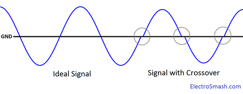
The classic Vbe Multiplier topology consists on one transistor and two resistors. The JRC4558 uses a two transistor approach, a variation from the classic one: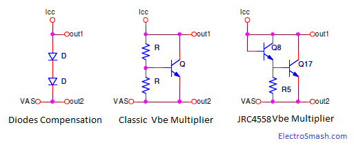
The Vbe Multiplier acts as a variable resistor which is mounted to the same silicon device as the output transistors, so they are thermally coupled. Temperature changes of the device affect the gain of the servo transistor; this consequently changes the voltage drop over the Vbe Multiplier circuit.
To improve the temperature coefficient between the Vbe multiplier matching and the output stage. The circuit Vbe Multiplier is equipped with an additional transistor Q8.
1.6 JRC4558 Feedback Path.
The task of the Feedback Path is to send in some way part of the output signal to the VAS. It has an important part in error correcting as well as in bandwidth and gain limiting.
The capacitor C2 provides frequency selective negative feedback. This technique is called Miller Compensation or Dominant Pole Compensation because it introduces a dominant pole which masks the effects of other poles into the open loop frequency response.
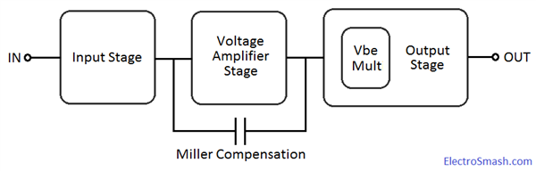
The feedback goes from the VAS transistor’s collector to its base, limiting the bandwidth and decreasing gain at higher frequencies and therefore improving stability at higher frequencies preventing oscillation.
2. The JRC4558 Myth.
Some guitar players believe that the JRC4558D original chip from the 80s has superior sounding characteristics, especially when it is placed in certain pedals like the Tube Screamer. In this case, the op-amp is claimed to be the holy grail if you want to get the original vintage sound; many enthusiasts search and open mass produced electronics from the 70s and 80s looking for the original series chips.
Japan Radio Corporation JRC (established in Sept. 1959) issued millions of these JRC4558D shiny-finished chips from the late 70s until mid-80s. They appear in every piece of Nippon electronics from this period.
The company JRC, later on, changed its name to New Japan Co. Ltd (NJM), and moved their production facilities to East Asia. They continued to produce 4558 op-amps -labeled as NJM4558D- but the factory was equipped with new production equipment. A few years later, NJM started re-issuing the JRC4558D (matte-finished), but again not produced at the old plant. The specs are the same as the old one, but the suspicion still lingers - since they changed facilities, are the reissue chips really as good as the old ones?.. the myth stats here.
- In the beginning, the JRC4558D was used for one single reason: it was cheap. So it was placed in tons of Japanese electronic equipment, a junky cheap old stereo or a clock radio could have several hidden inside it.
- You can also pay 30$ on eBay for NOS (New Old Stock) chips, which in theory are original parts manufactured in the 80s that have never been sold at retail.
- There is also that tale about NJM keeping all the original machinery used in the JRC4558 old manufacturing and able to produce again the chip if someone order more than 50 millions of parts.
Some people claim that they can really appreciate the difference between two 4558 chips from different manufacturers or even between two identical JRC4558 from the same manufacturer. However, in a guitar pedal there are a lot of factors that can modify the sound even more than the opamp can do: the components placement, values tolerance, circuit layout, soldering joints, temperature, power supply, etc ... by actual listening test as well as oscilloscope traces and spectrum analysis, there is no audible difference between today's 0.5$ NJM4558D and the old ones.
There is also plenty of alternatives to the JRC4558 chip, different users may have different opinions about their performance, but anyway all pin compatible:
- NJM4558 by New Japan Radio Company.
- RC4559 by Texas Instruments.
- NJM4556 by Japan Radio Company. Sound signature of the original with extra dynamics and attack
- TLC272 by Texas Instruments.It has a nice, complex distorted sound.
- TL072 by Texas Instruments, ST Microelectronics, and SGS Thomson Microelectronics.
- TL062 by Texas Instruments, ST Microelectronics, SGS Thomson Microelectronics, and Motorola.
- TL082 by National Semiconductor, Texas Instruments, ST Microelectronics, and Motorola.
- LM1458 by National Semiconductor and Fairchild Semiconductor.
- LM833 by National Semiconductor,ST Microelectronics, SGS Thomson Microelectronics, Motorola and ON Semiconductor.
- OPA2107 by Analog Devices. Rounder sound, makes it ideal for blues players
- OP275 by Analog Devices.
- OPA2604 by Burr-Brown and Texas Instruments.
- TLC2272, TLC2202 by Texas Instruments.
- LT1213 by Linear Technology.
- MC33078 by Texas Instruments. With very nice highs.
3. Resources
JRC4558 Datasheet.
Teemuk Kyttala Solid State Guitar Amplifiers, the Holy Scripture.
JFET Current Sources, by the University of California at Berkeley.
Current Sources in Wikipedia.
Vbe Multipliers by Jim Hagerman.
TL071 Blocks Diagram by Georgia Tech School of Engineering.
The Technology of Tube Screamer by R.G. Keen.
IC Opamps Evolution Through the Ages by Thomas H.Lee.
My sincere appreciation to „Nandor” for your assistance.
Thanks for reading, all feedback is appreciated